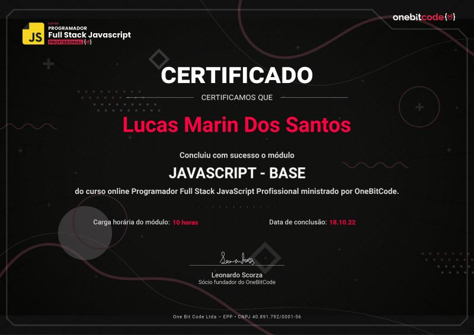
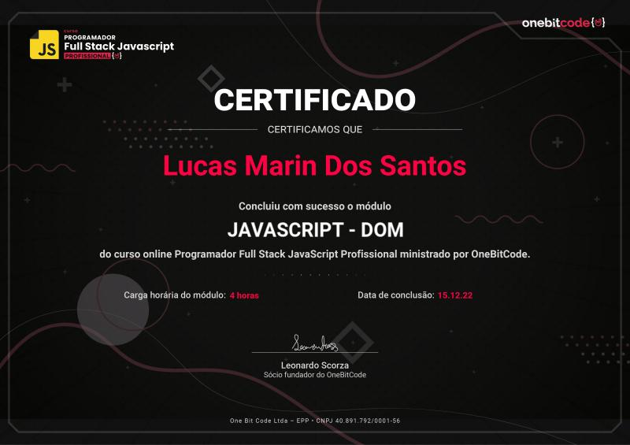
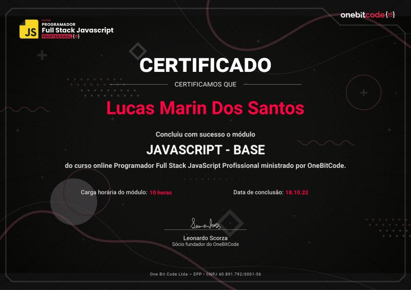
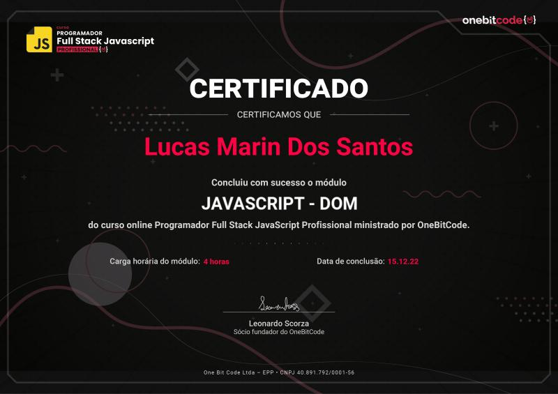
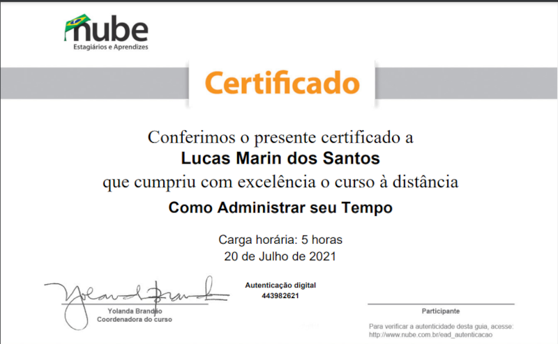
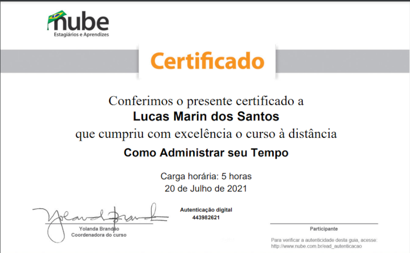

Oi, eu sou
Lucas Marin
Desenvolvedor full-stack
Apresentação
Bem-vindo"a" ao meu portfólio, nele você encontrará alguns dos meus projetos desenvolvidos até o momento, além de minhas informações academicas/profissionais e redes sociais caso queira entrar em contato, sinta-se a vontade para me mandar feedbacks e sugestões, pois com isso você me ajudará aprimorar ainda mais neste amplo e complexo universo da technologia, o céu não é o limite ! 🚀🚀


 




 
